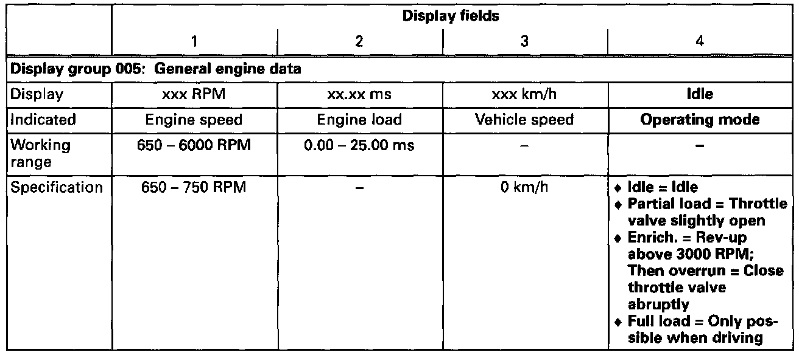

Engine Operation, Checking
Engine Operation:Checking:
NOTE:
Check establishes whether Engine Control Module (ECM) -J220- recognizes the engine operating condition.
Special tools, testers and auxiliary items:
- VAG 1551/1552 scan tool with VAG 1551/3 adapter cable.
Test conditions:
- Engine oil temperature min. 80°C (176°F).
Test sequence:
- Engine running at idle.
- Connect VAG 1551/1552 scan tool and select "Engine Electronics" address word 01. Testing and Inspection
Indicated on display
- Press buttons -0- and -8- to select "Read Measuring Value Block" function 08 and press -Q- button to confirm input.

Indicated on display
- Press buttons -0-, -0- and -5- to input display group 005 and press -Q- button to confirm input.

Indicated on display (1-4 = Display fields)
- Check whether the ECM recognizes the operating mode (display field 4).

If the specifications are not attained:
- Check accelerator mechanism for ease of operation.
- Checking throttle valve control module. Testing and Inspection